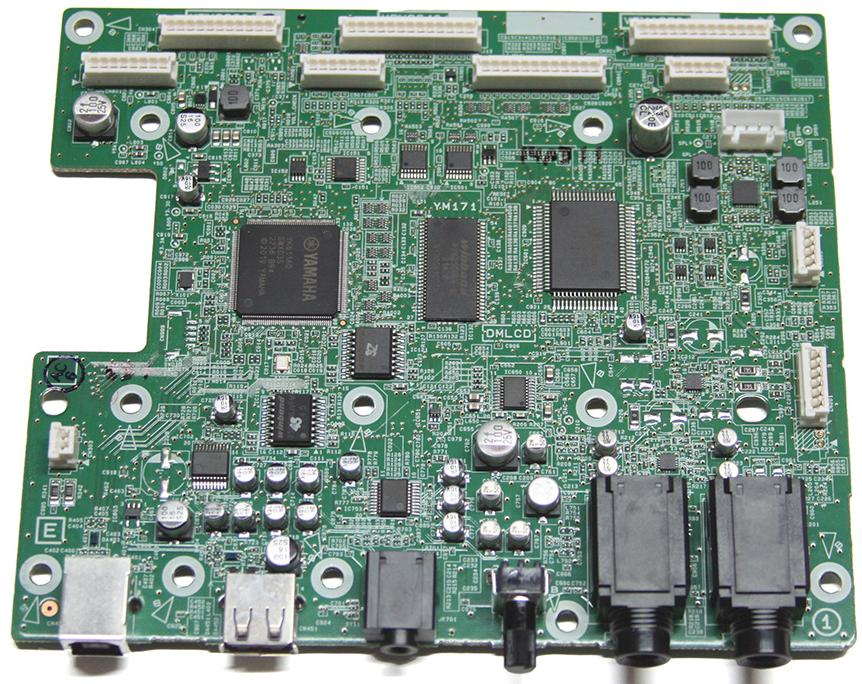
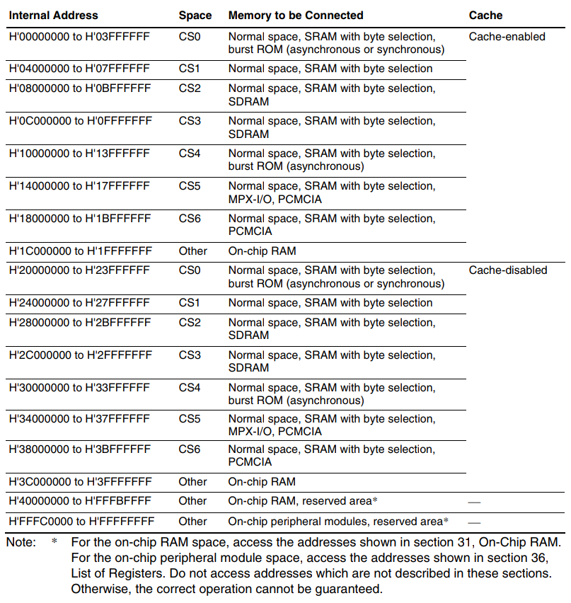

В синтезаторе используется микропроцессор SWX03S (именно S а не 5). Обозначение SCC105A, раrt. N: YK611A0. Внутренняя частота 135.4752MHz. Внешний тактовый генератор на 67.7376MHz.
Недавно утекший Service Manual на Yamaha PSR-E473:
https://device.report/m/cc9317c8221cf6e67a41c9cdac308fb93451323f16ce6143f2d432d15e187072.pdf
Предположение: Возможно, что SWX03S - это перелицованный SH7262 фирмы Renesas. Данное предположение неверно.
Забегая вперед, можно сказать, что декомпиляция блоков памяти показала, что система команд процессора SWX03S - это ARM v7 Little Endian (ARMhf).
Память
Плата, согласно Service Manual на Yamaha E473, содержит следующую память:
Плата
Фото материнской платы от PSR-E473: https://syntaur.com/Part-11533-Main-board-Yamaha-PSR-E473 (Yamaha part number VDW98300):

Дамп первых адресов, полученный через shell
> d 0
00000000 00 80 01 01 01 04 00 00 05 01 00 00 0B 01 00 00
00000010 11 01 00 00 17 01 00 00 1D 01 00 00 23 01 00 00 #
00000020 29 01 00 00 2F 01 00 00 35 01 00 00 3B 01 00 00 ) / 5 ;
00000030 41 01 00 00 47 01 00 00 4D 01 00 00 53 01 00 00 A G M S
00000040 59 01 00 00 5F 01 00 00 65 01 00 00 6B 01 00 00 Y _ e k
00000050 71 01 00 00 77 01 00 00 7D 01 00 00 83 01 00 00 q w }
00000060 89 01 00 00 8F 01 00 00 95 01 00 00 9B 01 00 00
00000070 A1 01 00 00 A7 01 00 00 AD 01 00 00 B3 01 00 00
00000080 B9 01 00 00 BF 01 00 00 C5 01 00 00 CB 01 00 00
00000090 D1 01 00 00 D7 01 00 00 DD 01 00 00 E3 01 00 00
000000A0 E9 01 00 00 EF 01 00 00 F5 01 00 00 FB 01 00 00
000000B0 01 02 00 00 07 02 00 00 0D 02 00 00 13 02 00 00
000000C0 00 00 00 00 00 00 00 00 00 00 00 00 00 00 00 00
000000D0 00 00 00 00 00 00 00 00 00 00 00 00 00 00 00 00
000000E0 00 00 00 00 00 00 00 00 00 00 00 00 00 00 00 00
000000F0 00 00 00 00 00 00 00 00 00 00 00 00 00 00 00 00
> d 100
00000100 FF F7 FE BF 02 20 FF F7 FB BF 03 20 FF F7 F8 BF
00000110 04 20 FF F7 F5 BF 05 20 FF F7 F2 BF 06 20 FF F7
00000120 EF BF 07 20 FF F7 EC BF 08 20 FF F7 E9 BF 09 20
00000130 FF F7 E6 BF 0A 20 FF F7 E3 BF 0B 20 FF F7 E0 BF
00000140 0C 20 FF F7 DD BF 0D 20 FF F7 DA BF 0E 20 FF F7
00000150 D7 BF 0F 20 FF F7 D4 BF 10 20 FF F7 D1 BF 11 20
00000160 FF F7 CE BF 12 20 FF F7 CB BF 13 20 FF F7 C8 BF
00000170 14 20 FF F7 C5 BF 15 20 FF F7 C2 BF 16 20 FF F7
00000180 BF BF 17 20 FF F7 BC BF 18 20 FF F7 B9 BF 19 20
00000190 FF F7 B6 BF 1A 20 FF F7 B3 BF 1B 20 FF F7 B0 BF
000001A0 1C 20 FF F7 AD BF 1D 20 FF F7 AA BF 1E 20 FF F7
000001B0 A7 BF 1F 20 FF F7 A4 BF 20 20 FF F7 A1 BF 21 20 !
000001C0 FF F7 9E BF 22 20 FF F7 9B BF 23 20 FF F7 98 BF " #
000001D0 24 20 FF F7 95 BF 25 20 FF F7 92 BF 26 20 FF F7 $ % &
000001E0 8F BF 27 20 FF F7 8C BF 28 20 FF F7 89 BF 29 20 ' ( )
000001F0 FF F7 86 BF 2A 20 FF F7 83 BF 2B 20 FF F7 80 BF * +
Предположение 1, формат LE (little-endian)
Как видно, начиная с адреса 0, идет два каких-то 32-х битных числа:
0x01018000
0x00000401
Что они означают, пока что понять невозможно. Попытка сделать дамп с адреса 0x01018000 приводит к зависанию. Второе число похоже на адрес, но почему-то не круглое, а отличается на единицу.
Следующие 32-х битные числа с большой долей вероятности представляют собой 32-х битные адреса, которые указывают на близкие адреса, начиная с 0x100. Шаг, на которые указывают эти адреса - 6 байт, это касается абсолютно всех адресов, прописанных с 0x00000008 по 0x000000BF. Эти значения то же не круглые (не четные, не выровненные), что очень странно: на классических архитектурах такое редко встречается в таблицах переходов.
Hex -> Int
01018000 -> 16875520
00000401 -> 1025
00000105 -> 261
0000010B -> 267
00000111 -> 273
00000117 -> 279
0000011D -> 285
00000123 -> 291
00000129 -> 297
0000012F -> 303
00000135 -> 309
0000013B -> 315
00000141 -> 321
00000147 -> 327
0000014D -> 333
00000153 -> 339
00000159 -> 345
0000015F -> 351
00000165 -> 357
0000016B -> 363
00000171 -> 369
00000177 -> 375
0000017D -> 381
00000183 -> 387
00000189 -> 393
0000018F -> 399
00000195 -> 405
0000019B -> 411
000001A1 -> 417
000001A7 -> 423
000001AD -> 429
000001B3 -> 435
000001B9 -> 441
000001BF -> 447
000001C5 -> 453
000001CB -> 459
000001D1 -> 465
000001D7 -> 471
000001DD -> 477
000001E3 -> 483
000001E9 -> 489
000001EF -> 495
000001F5 -> 501
000001FB -> 507
Начиная с адреса 0x100 идут байты, структура которых повторяется каждые 6 байт. Если их вывести в столбик, то получится:
FF F7 FE BF 02 20
FF F7 FB BF 03 20
FF F7 F8 BF 04 20
FF F7 F5 BF 05 20
FF F7 F2 BF 06 20
FF F7 EF BF 07 20
FF F7 EC BF 08 20
FF F7 E9 BF 09 20
FF F7 E6 BF 0A 20
FF F7 E3 BF 0B 20
FF F7 E0 BF 0C 20
FF F7 DD BF 0D 20
FF F7 DA BF 0E 20
FF F7 D7 BF 0F 20
FF F7 D4 BF 10 20
FF F7 D1 BF 11 20
FF F7 CE BF 12 20
FF F7 CB BF 13 20
FF F7 C8 BF 14 20
FF F7 C5 BF 15 20
FF F7 C2 BF 16 20
FF F7 BF BF 17 20
FF F7 BC BF 18 20
FF F7 B9 BF 19 20
FF F7 B6 BF 1A 20
FF F7 B3 BF 1B 20
FF F7 B0 BF 1C 20
FF F7 AD BF 1D 20
FF F7 AA BF 1E 20
FF F7 A7 BF 1F 20
FF F7 A4 BF 20 20
FF F7 A1 BF 21 20
FF F7 9E BF 22 20
FF F7 9B BF 23 20
FF F7 98 BF 24 20
FF F7 95 BF 25 20
FF F7 92 BF 26 20
FF F7 8F BF 27 20
FF F7 8C BF 28 20
FF F7 89 BF 29 20
FF F7 86 BF 2A 20
FF F7 83 BF 2B 20
FF F7 80 BF .....
Байты FF F7 - они фиксированы, четвертый и шестой байты BF и 20 - тоже фиксированы. Изменяются только третий и пятый байты. Третий байт уменьшается на 3. Пятый байт уменьшается на единицу.
Если предположить, что эта таблица начинается с адреса 0x0105, который написан в третьем по счету DWORD (0x0008), тогда, учитывая что периодичность в 6 байт сохраняется, можно рассматривать байты как:
20 FF F7 FB BF 03
20 FF F7 F8 BF 04
20 FF F7 F5 BF 05
20 FF F7 F2 BF 06
20 FF F7 EF BF 07
20 FF F7 EC BF 08
20 FF F7 E9 BF 09
...
Возможно это не адреса, а команды процессора: три 16-битных команды, или первая 16 бит и вторая 32 бит, или первая 32 бит и вторая 16 бит.
Предположение 2, формат BE (big-endian)
Если используется процессор семейства SH-2, то в нем используется BE (big-endian) порядок следования байт. Кроме того, из документации известно, что в адресах 0x0000 - 0x07FF находится таблица адресов прерываний. А первые два long word используются для стартовой инициализации PC (progran counter) и SP (stack pointer). Тогда получается, что при старте начинает выполняться программа с адреса 0x00800101, а стек начинается с адреса 0x01040000.
PC 0x00800101
SP 0x01040000
Хотя нельзя исключать, что в целях защиты от реверсинжиниринга, после старта, где-то в глубинах исполняемого кода, первые 8 байт памяти заполняются фейковыми адресами.
Согласно документации на SH-2, с адреса 0x0010 по 0x00FF находятся адреса прерываний, обрабатывающих различные ошибки. Тогда получается, что адреса обработчиков ошибок выгядят как:
11010000
17010000
1D010000
23010000
...
Между адресами очень большой шаг в 100'663'296 байт. Что выглядит неестественно.
Но начиная с 0x0100 по 0x07FF должны идти адреса аппаратных прерываний. Адреса аппаратных прерываний следующие:
0xFFF7FEBF
0x0220FFF7
0xFBBF0320
0xFFF7F8BF
0x0420FFF7
0xF5BF0520
0xFFF7F2BF
0x0620FFF7
...
Здесь очень большой разнобой, очевидной структуры в адресах не прослеживается кроме того, что некоторые адреса достаточно близки друг к другу.
Общая структура, с некоторыми оговорками, похожа ну ту, что написана в документации:
Предположение 3, смешанный формат BE и LE
В документации на SP2 (чип SH7262) найдено следующее:
This LSI supports both big endian, in which the most significant byte (MSB) of data is that in the direction of the 0th address, and little endian, in which the least significant byte (LSB) is that in the direction of the 0th address. In the initial state after a power-on reset, all areas will be in big endian mode. Endian mode can be changed by setting the CSnBCR register as long as the target space is not being accessed.
Эта микросхема поддерживает как big endian, в котором старший байт (MSB) данных находится в направлении 0-го адреса, так и little endian, в котором младший байт (LSB) находится в направлении 0-го адреса. В исходном состоянии, после сброса, при включении питания все области будут в big endian режиме. Режим endian можно изменить, установив регистр CSnBCR, пока целевое пространство не будет доступно.
(Что подразумевается под терминами area (область) и space (пространство) - не совсем понятно. Имеется в виду область адресов / адресное пространство или что-то другое?)
В любом случае, данный чип поддерживает переключение на LE. А это может означать следующее. В сам момент инициализации при включении, чип работает в режиме BE, то есть PC и SP заполняются так:
PC 0x00800101
SP 0x01040000
Далее в коде происходит переключение на LE, и байты начиная с 0x0010 начинают трактоваться так, как написано в предположении 1.
Но тогда непонятен формат диапазона адресов 0x0100 - 0x07FF. В документации написано, что это область таблицы векторов прерываний, а значит там должны быть адреса. В предположении 1 видно, что периодичность данных в этом диапазоне, скорее всего, 6 байт. А значит 4-байтовые адреса там лежать не могут. Возможно, под названием External Interrupt (IRQ), on-chip peripheral module понимается область, в которой должны быть не адреса а код? Но в той же документации написано, что там хранятся адреса для векторов с номерами с 64 по 511.
Предположение 4, что в аресах 0x0100 - 0x7FF лежит код
Попытка дизассемблить начиная с адреса 0x0100 (в исследуемый файл положены байты, начиная с 0x0100):
$ sh-elf-objdump -D -b binary -m sh2a firmware01.bin
firmware01.bin: формат файла binary
Дизассемблирование раздела .data:
00000000 <.data>:
0: ff f7 fmov fr15,@(r0,r15)
2: fe bf .word 0xfebf
4: 02 20 ff f7 movi20 #196599,r2
8: fb bf .word 0xfbbf
a: 03 20 ff f7 movi20 #196599,r3
e: f8 bf .word 0xf8bf
10: 04 20 ff f7 movi20 #196599,r4
14: f5 bf .word 0xf5bf
16: 05 20 ff f7 movi20 #196599,r5
1a: f2 bf .word 0xf2bf
1c: 06 20 ff f7 movi20 #196599,r6
20: ef bf mov #-65,r15
22: 07 20 ff f7 movi20 #196599,r7
26: ec bf mov #-65,r12
28: 08 20 ff f7 movi20 #196599,r8
2c: e9 bf mov #-65,r9
2e: 09 20 ff f7 movi20 #196599,r9
32: e6 bf mov #-65,r6
34: 0a 20 ff f7 movi20 #196599,r10
38: e3 bf mov #-65,r3
3a: 0b 20 ff f7 movi20 #196599,r11
3e: e0 bf mov #-65,r0
40: 0c 20 ff f7 movi20 #196599,r12
44: dd bf mov.l 0x344,r13
46: 0d 20 ff f7 movi20 #196599,r13
4a: da bf mov.l 0x348,r10
4c: 0e 20 ff f7 movi20 #196599,r14
50: d7 bf mov.l 0x350,r7
52: 0f 20 ff f7 movi20 #196599,r15
56: d4 bf mov.l 0x354,r4
58: 10 20 mov.l r2,@(0,r0)
5a: ff f7 fmov fr15,@(r0,r15)
5c: d1 bf mov.l 0x35c,r1
5e: 11 20 mov.l r2,@(0,r1)
60: ff f7 fmov fr15,@(r0,r15)
62: ce bf xor.b #191,@(r0,gbr)
64: 12 20 mov.l r2,@(0,r2)
66: ff f7 fmov fr15,@(r0,r15)
68: cb bf or #191,r0
6a: 13 20 mov.l r2,@(0,r3)
6c: ff f7 fmov fr15,@(r0,r15)
6e: c8 bf tst #191,r0
70: 14 20 mov.l r2,@(0,r4)
На осмысленные действия (например какое-то вычисление и переход) мало похоже. Наличие .word говорит о том, что инструкция не дизассемблировалась.
Попытка дизассемблить с адреса 0x0105:
$ sh-elf-objdump -D -b binary -m sh2a firmware02.bin
firmware02.bin: формат файла binary
Дизассемблирование раздела .data:
00000000 <.data>:
0: 20 ff muls.w r15,r0
2: f7 fb fmov fr15,@-r7
4: bf 03 bsr 0xfffffe0e
6: 20 ff muls.w r15,r0
8: f7 f8 fmov @r15,fr7
a: bf 04 bsr 0xfffffe16
c: 20 ff muls.w r15,r0
e: f7 f5 fcmp/gt fr15,fr7
10: bf 05 bsr 0xfffffe1e
12: 20 ff muls.w r15,r0
14: f7 f2 fmul fr15,fr7
16: bf 06 bsr 0xfffffe26
18: 20 ff muls.w r15,r0
1a: f7 ef .word 0xf7ef
1c: bf 07 bsr 0xfffffe2e
1e: 20 ff muls.w r15,r0
20: f7 ec fmov fr14,fr7
22: bf 08 bsr 0xfffffe36
24: 20 ff muls.w r15,r0
26: f7 e9 fmov @r14+,fr7
28: bf 09 bsr 0xfffffe3e
2a: 20 ff muls.w r15,r0
2c: f7 e6 fmov @(r0,r14),fr7
2e: bf 0a bsr 0xfffffe46
30: 20 ff muls.w r15,r0
32: f7 e3 fdiv fr14,fr7
34: bf 0b bsr 0xfffffe4e
36: 20 ff muls.w r15,r0
38: f7 e0 fadd fr14,fr7
3a: bf 0c bsr 0xfffffe56
3c: 20 ff muls.w r15,r0
3e: f7 dd .word 0xf7dd
40: bf 0d bsr 0xfffffe5e
42: 20 ff muls.w r15,r0
44: f7 da fmov fr13,@r7
46: bf 0e bsr 0xfffffe66
48: 20 ff muls.w r15,r0
4a: f7 d7 fmov fr13,@(r0,r7)
4c: bf 0f bsr 0xfffffe6e
Здесь тоже бессмысленные инструкции, а так же есть .word, что говорит о том что эти инструкции не дизассемблировались.
Может быть, это все-таки ARM? Нет, проверил через arm-none-eabi-objdump с разными ARM-архитектурами, эти данные не похожина ARM-код.
Предположение 5
Начиная с адреса 0x0100 значения можно трактовать как 32-х битные адреcа:
FF F7 FE BF
02 20 FF F7
FB BF 03 20
FF F7 F8 BF
04 20 FF F7
F5 BF 05 20
FF F7 F2 BF
06 20 FF F7
EF BF 07 20
FF F7 EC BF
08 20 FF F7
E9 BF 09 20
FF F7 E6 BF
0A 20 FF F7
E3 BF 0B 20
FF F7 E0 BF
...
Близкие друг к другу адреса чередуются через три.
Если режим BE, то первые адреса в тройках выглядят адекватно. Вторые адреса - слишком большой шаг. Третьи адреса в тройках - тоже большой шаг.
Если режим LE, то все адреса в тройках выглядят адекватно. Видны диапазоны 0xBFxxxxxx, 0xF7xxxxxx, 0x20xxxxxx. Здесь возникает вопрос: а почему адреса области External Interrupt (IRQ) on-chip peripheral module (именно эта область начинается с 0x0100) расположены тройками? Разумное объяснение - это то что подключены 3 внешних (однотипных?) устройства с кучей прерываний (сколько троек адресов - столько и прерываний). Возможно ли такое?
Если принимается, что рабочий режим LE, то тогда и адреса обработчиков ошибок в диапазоне 0x0010 по 0x00FF достаточно адекватно выглядят:
0x00000111
0x00000117
0x0000011D
0x00000123
0x00000129
0x0000012F
0x00000135
0x0000013B
0x00000141
0x00000147
0x0000014D
0x00000153
...
Но тогда опять: это адреса на диапазон с адреса 0x0100, шаг адресов 6 байт, тогда диапазон с 0x0100 нельзя рассматривать как 32-х битные адреса (т. е. по 4 байта). А если это код, то с 0x0111 начинается байт 0x20 и так далее, а эти команды не смогли декомпилироваться в предположении N4.
Что еще проверить? Надо снять полный дамп, и посмотреть его хотя бы командой:
binwalk dump.bin
Данная программа способна определить наличие:
# mov.l @r15+, r9
# rts
SuperH instructions, little endian, function epilogue (gcc)
\xF6\x69\x0B\x00\xF6\x68
SuperH instructions, big endian, function epilogue (gcc)
\x69\xF6\x00\x0B\x68\xF6
Возможно, будет что-то найдено. Однако надо учесть, что фирма RENESAS, производящая SH-чипы, имеет собственный компилятор SHC - Renesas C/C++ Compiler for SuperH Family (SH). Возможно, что Yamaha пользуется им.
Карта памяти

В документации написано буквольно следующее: адресное пространство разделено на 7 областей, с 0 по 6. Каждая область может иметь максимальный размер 64Mb.
Область CS0 всегда настроена на ширину шины данных в 16 бит. Последовательность байт в этой области - всегда Big Endian, и не может меняться.
Области CS1-CS6 вначале настроены на ширину шины данных в 16 бит, но ширина шины может быть изменена программно (видимо, переключена на 8 бит). Последовательность байт в этих областях - Big Endian, но может быть программно изменена на Little Endian.
Предположение 6 - Процессор SH-2 (SuperH) RISC (предположение неверно)
Предположительно, в Yamaha-E473 используется процессор SH-2 (SuperH) RISC. О нем известны следующие ключевые особенности:
RISC-инструкции: Фиксированная длина (16 бит для Thumb-подобного режима, 32 бита для полного набора).
Пример:
MOV.L R0, @R1 ; Запись R0 в память по адресу R1 (.L - это long, т. е. 32 bit)
ADD #1, R2 ; Инкремент R2
Регистры:
DSP-расширения: Умножение с накоплением (MAC) за 1 такт.
Прерывания: Векторная таблица начинается по адресу 0x00000000.
Если таблица векторов переходов по прерываниям начинается с 0x0, то тогда непонятно, почему самые первые 4 байта содержат адрес 0x01018000, при попытке считать данные (показать дамп через команду шелла d) происходит зависание синтезатора. Может быть это некорректный адрес? Может быть это защита от реверсинжиниринга? Нет, это такая структура (см. предположение 3).
Вот что написано о процессорах архитектуры SH-2 на сайте cpushack.com:
Линейка микроконтроллеров SuperH (теперь это действительно полноценные процессоры) изначально была разработана компанией Hitachi. Они нашли широкое применение в различных приложениях, от контроллеров принтеров до систем управления автомобилями. Компания Renesas только что анонсировала еще одного представителя семейства SuperH. Модели SH7264 и SH7262 оснащены RISC-ядром SH-2A, работающим на частоте 144 МГц, а также FPU, но теперь в них встроено до 1 Мбайт SRAM на кристалле, а также множество функций видеосвязи.
Эти чипы теперь могут управлять дисплеями без использования внешней оперативной памяти, что экономит затраты и место на плате. Их можно встретить в таких устройствах, как автомобильные навигационные системы, копировальные аппараты и тому подобное.
September 6th, 2009
Учитывая, что выпуск чипов SWX03S начался примерно в 2019 году, использование архитектуры SH-2 спустя 10 лет выглядит очень странно. Хотя для удешевления, возможно могли использовать и эту архитектуру. Неясно чем она лучше универсальной ARM. Разве что пренепременным наличием DSP на борту. А так же частоты работы ядра у SWX03S и SH7264/SH7262 очень близкие (135.4752 МГц и 144 МГц). То есть SWX03S работает на немного заниженной частоте, которая задана для прямой работы с частотой дискретизации 44,1кГц. Плюс понижение частоты от номинала немного охлаждает чип.
Предположение 7 - Процессор ARM v7 Little Endian (ARMhf)
На основе декомпиляции дампов через Ghidra, стало однозначно ясно, что в Yamaha-E473 используется какой-то ARM процессор. Лучше всего подходят следующие характеристики:
ARM v7 Little Endian (ARMhf) 32 bit 176 pin
Под эти характеристики подходят/не подходят следующие готовые микросхемы (возможно, Yamaha перелицовывает/ брендирует):
STM32H743VIH6 TFBGA 100 8x8x1.2 P 0.8 mm - не подходит кол-во ножек
STM32H743VIT6 LQFP 100 14x14x1.4 mm - не подходит кол-во ножек
STM32H743VIT6TR LQFP 100 14x14x1.4 mm - не подходит кол-во ножек
STM32H743VIH6TR TFBGA 100 8x8x1.2 P 0.8 mm - не подходит кол-во ножек
ATSAMV71Q21 LQFP100, 14x14 mm, Pitch 0.5 mm - не подходит кол-во ножек
ATSAMV71Q21 LQFP144, 20x20 mm, Pitch 0.5 mm - не подходит кол-во ножек
STM32F429ZIT6 LQFP176 (24 × 24 mm)